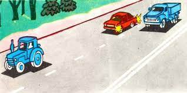
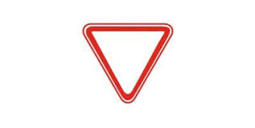
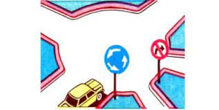
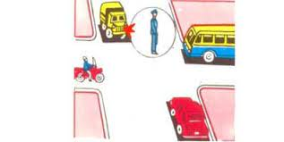
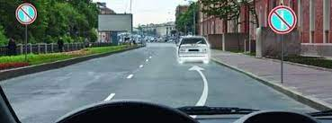
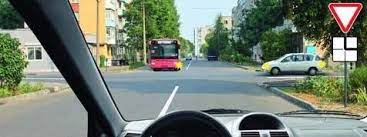
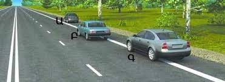
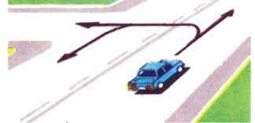
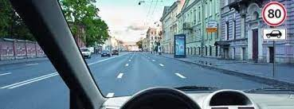

Թեստ 33
30:00
1. «Ճանապարհային երթևեկության անվտանգության ապահովման մասին» ՀՀ օրենքի համաձայն` տրանսպորտային միջոց վարել սովորեցնողը`
2. «Ճանապարհային երթևեկության անվտանգության ապահովման մասին» ՀՀ օրենքի համաձայն` ավտոբուս է համարվում`
3. Տրանսպորտային միջոցների շահագործումն արգելվում է, եթե`
4. Ավտոբուսների շահագործումն արգելվում է, եթե՝
5. Ո՞ր տրանսպորտային միջոցի վարորդը պետք է զիջի ճանապարհը:

6. Ո՞ր դեպքում է վարորդը ճիշտ կատարել այս նշանի պահանջները:

7. Ո՞ր ուղղությամբ է արգելվում երթևեկությունը:

8. Ո՞ր պատասխանում են ճիշտ նշված այն տրանսպորտային միջոցները, որոնց թույլատրվում է երթևեկությունը:

9. Ամսվա կենտ օրերին կարելի է՞ կայանել նշված վայրում:

10. Ուղիղ երթևեկելիս պարտավոր եք զիջել:

11. Ո՞ր վարորդն է խախտել կանգառ կատարելու կանոնները:

12. Եթե հանդիպակաց երթևեկությունը դժվար է այս իրավիճակում, ապա ճանապարհը պետք է զիջի:
13. Սլաքներով նշված ո՞ր ուղղություններով է թույլատրվում երթևեկությունը:

14. Ի՞նչ արագությամբ է թույլատրվում երթևեկել 3.5 տ ոչ ավելի թույլատրելի առավելագույն զանգված ունեցող բեռնատար ավտոմոբիլներով` բնակավայրերից դուրս:
15. Ո՞ր դեպքում կանոնները չեն պարտադրում տալ նախազգուշացնող ազդանշան:
16. Ո՞ր դեպքում կանոնները չեն պարտադրում ավտոբուսի վարորդին տալ նախազգուշացնող ազդանշան:
17. Առանց վերադասավորման երթևեկող վարորդը զիջել աջից վերադասավորվող վարորդին:
18. Այս նշաններից հետո 3.5 տոննայից ոչ ավել թույլատրելի առավելագույն զանգվածով բեռնատարի վարորդին երթևեկության առավելագույն արագությունը սահմանված է:
